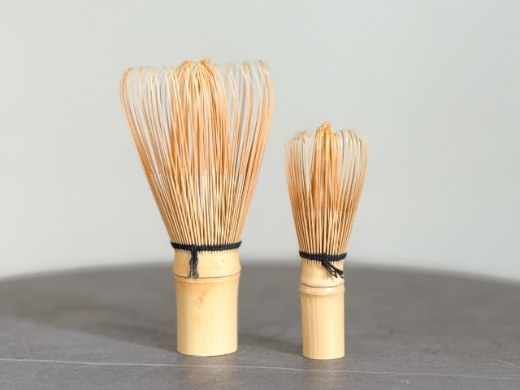
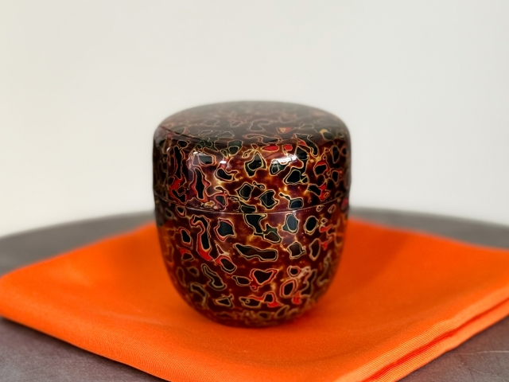

茶道具の紹介
一つひとつに宿る、茶の湯の心
茶道には、用途や意味を持った多くの道具が使われています。
それぞれの形や素材、佇まいには茶の湯の精神と美意識が息づいています。

- 抹茶をいただくための器です。季節や席の趣に合わせて選ばれます。表面の釉薬の流れや土の質感には侘び寂びの美が宿り、一つとして同じものはありません。
- 実は茶碗の「正面」は自分からは見えない位置にあり、お客様に向けて美しい部分を見せるのが作法。そんな細やかな心配りが茶道らしさです。
茶碗（ちゃわん）
- 竹を細かく削って作られた、いわば「抹茶専用の泡立て器」。
- 毎回、使う前に茶筅をお湯で温めるのは、竹を柔らかくして長持ちさせるためです。
茶筅（ちゃせん）


- 抹茶をすくうための細い竹のスプーン。とてもシンプルですが、実は一本ずつ微妙に形が違い、職人によって”クセ”が出ます。
- 茶杓には銘（めい）が付けられることもあり、例えば”初雪”や”春風”など、詩的な名前が付くことも。ちょっとロマンのある道具です。
茶杓（ちゃしゃく）
- 抹茶を入れる、漆塗りの丸い小さな容器。手のひらにすっと収まるサイズ感で、見た目より軽いのが特徴です。
- 名前の由来は、果物の「ナツメの実」に似ているから。漆の艶は光によって表情が変わるため、写真映えする茶道具No.1ともいわれています。
棗（なつめ）

道具に触れ、茶の湯の奥深さを感じてみてください。